Fast, native Windows apps that respect your files and your privacy.
Open source, portable, no telemetry.

Every book on every drive, in one library that reads them all: EPUB, PDF, MOBI, AZW3, KFX and comics, with word meanings in English, Myanmar and Hindi.
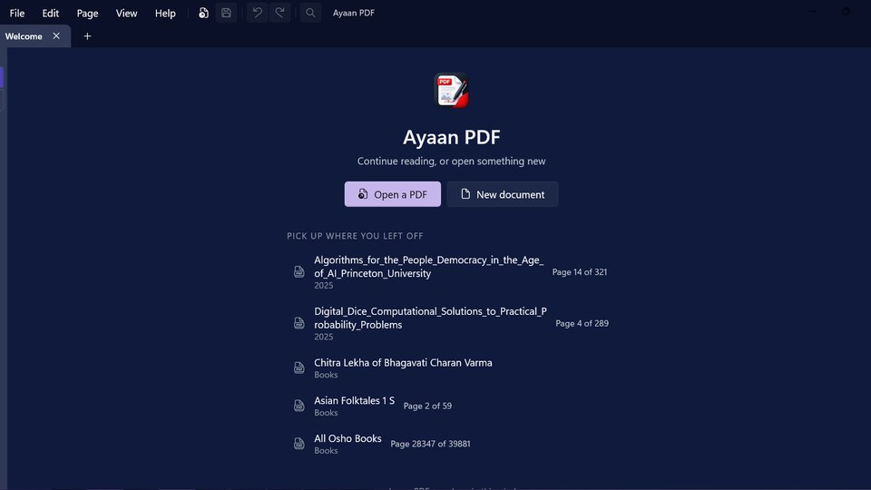
The PDF editor that edits the words on the page, Hindi and Myanmar included. Turn scans into searchable text and look up words offline.
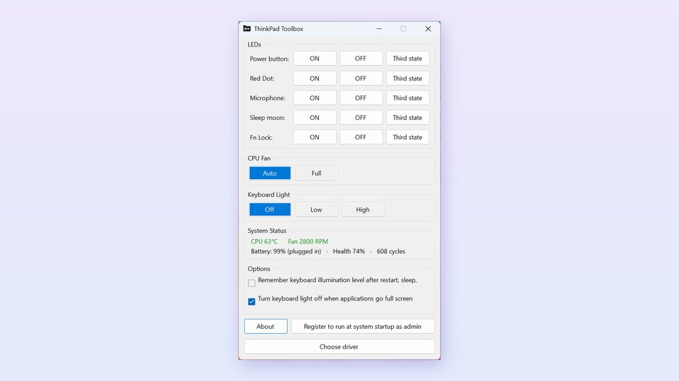
Control your ThinkPad's status LEDs, CPU fan, and keyboard backlight, with live CPU temperature, fan RPM, and battery info.
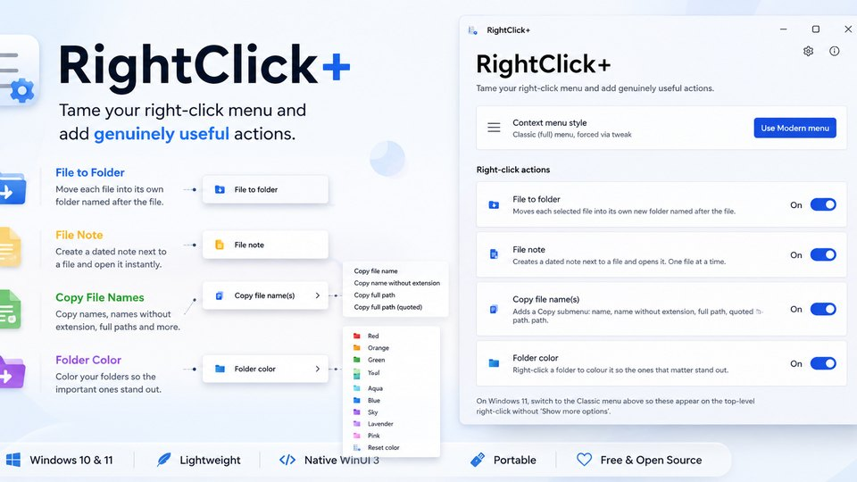
Adds four handy actions to the Windows right-click menu (File to Folder, File Note, Copy File Names, Folder Color), each one you can toggle on or off. Portable, no admin.
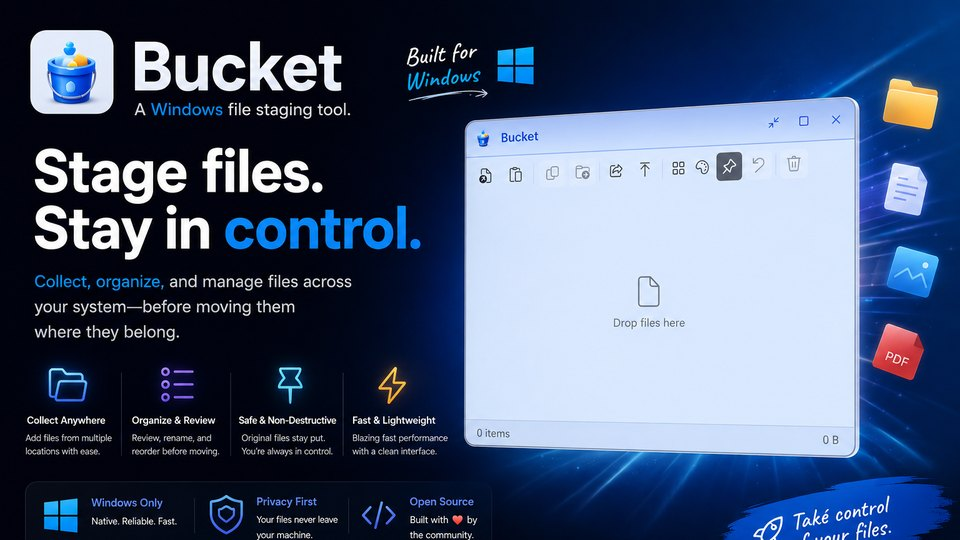
A portable file-staging shelf — gather files, folders, text, images and links, then copy, move, zip, or drag them out.
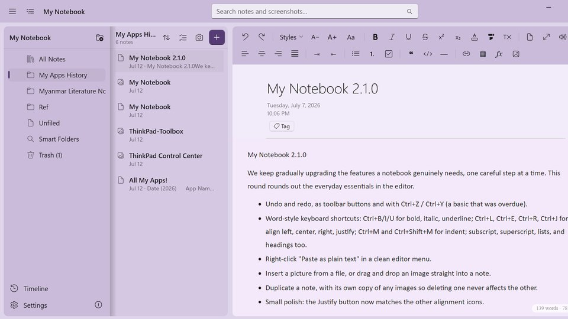
Local-first notebook with OCR-searchable screenshot threads and a Myanmar-aware search. No account, no cloud.
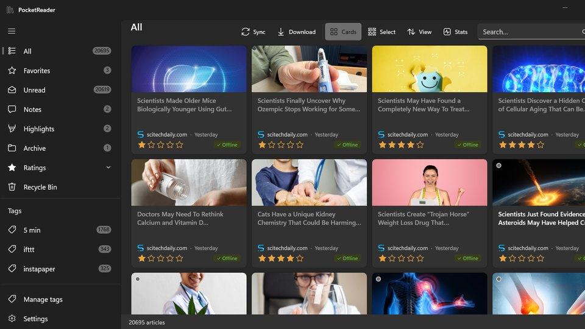
Turn your Raindrop.io bookmarks into a fast, private, fully-offline reading library.
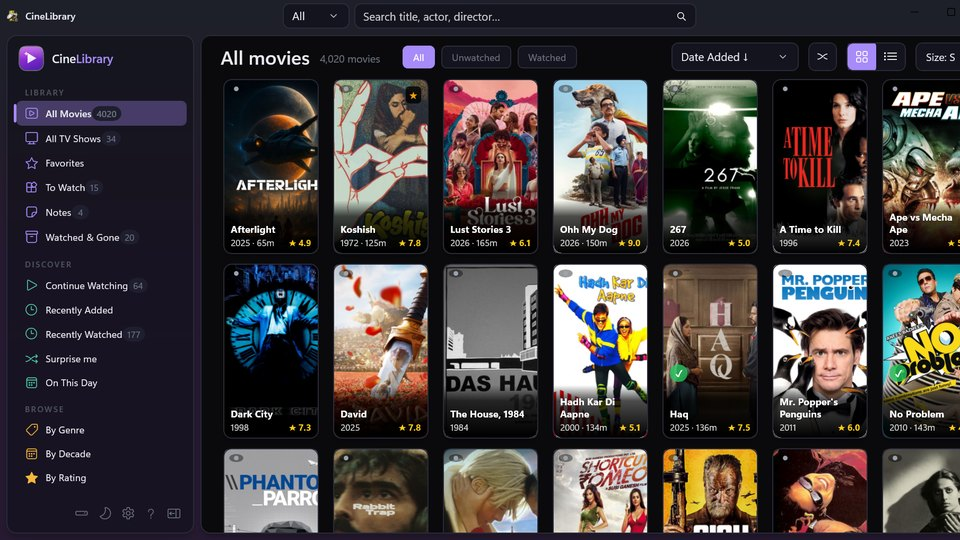
Catalog and browse your movies and TV shows across multiple external drives.
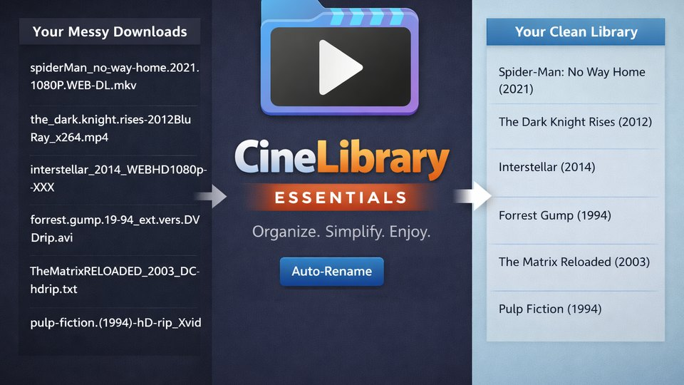
Rename, organize, and scrape rich metadata for movies and TV shows — Plex/Kodi/Jellyfin-ready.
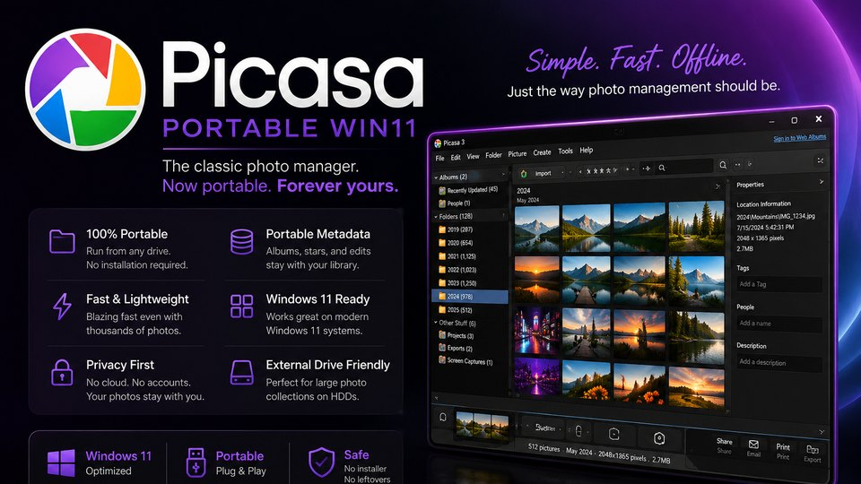
A portable, sandboxed Picasa 3.9 — runs from any folder, scans only its own Pictures subfolder, leaves zero trace.
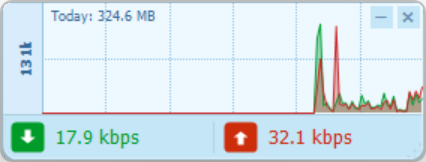
Lightweight network bandwidth widget. Sits in the corner, gets out of the way.
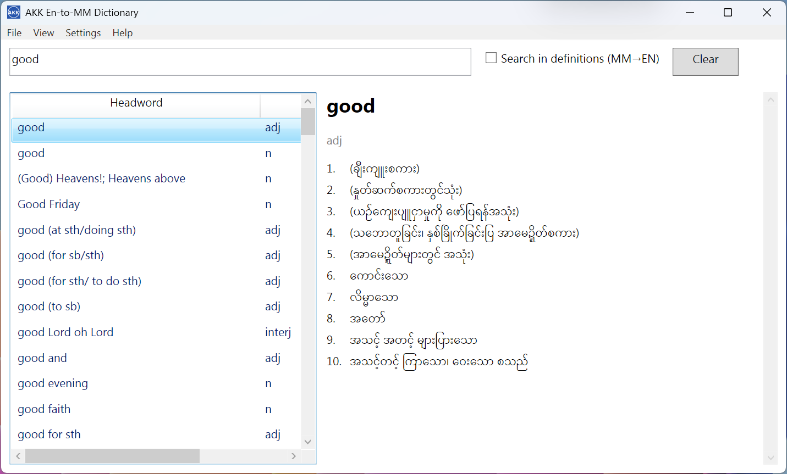
Offline English-to-Myanmar dictionary. Fast lookup, clean reader, no internet required.